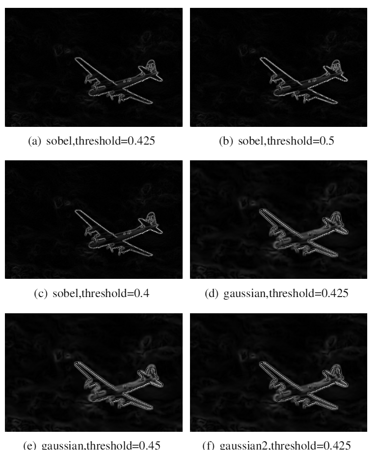
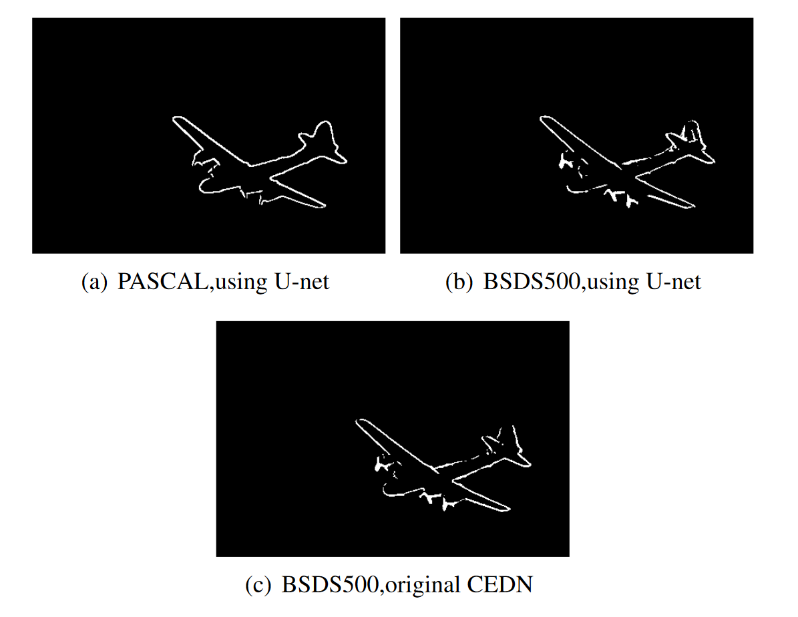
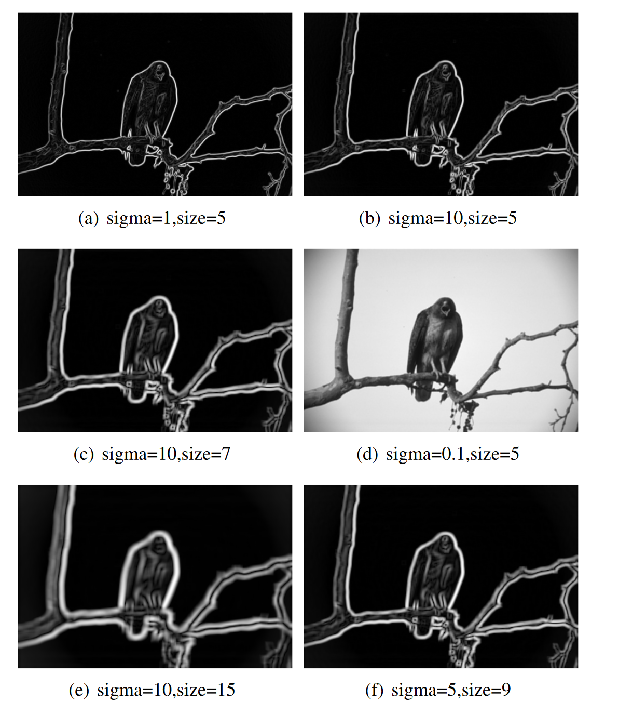

Contour detection
Extra credit of individual assignment for ENGN4528(Computer Vision) - 2020 S1
Used Fully Convolutional Encoder-Decoder Network & U-net to detect the contour of objects.
Fixed the encoder and adjusted the decoder to do semantic segmentation task.
Improved the average max F1 score by 18.9% compared to classic canny edge detector.
Used multiple datasets for training and validation, including COCO, PASCAL VOC 2012, BSDS500.
Graded 25/25.
[Full report]
This link contains all assignment material,for contour detection part please refer to Chapter 3.


